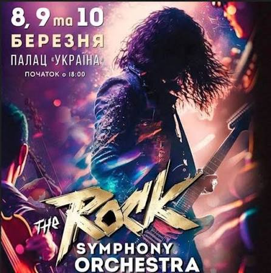
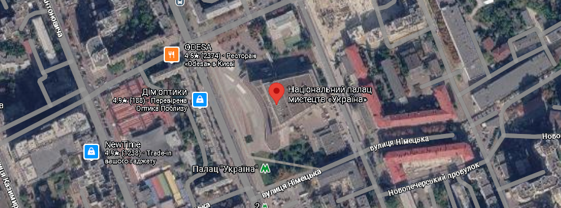

Три концертні дні
Шоу відбудеться 8, 9 та 10 березня 2026 року, початок кожного концерту о 18:00.
8, 9 та 10 березня 2026 · Київ

The Rock Symphony Orchestra — рок-шоу у супроводі симфонічного оркестру, яке пройде у Києві протягом трьох днів.
Дата: 8, 9 та 10 березня 2026 року
Початок: 18:00
Місце проведення: Національний палац мистецтв «Україна», м. Київ, вул. Велика Васильківська, 103
Шоу відбудеться 8, 9 та 10 березня 2026 року, початок кожного концерту о 18:00.
У проєкті беруть участь симфонічний оркестр, рок-бенд, академічний хор та 8 солістів.
У програмі музика Metallica, Queen, AC/DC, Led Zeppelin. Виступ супроводжується світловим та сценографічним шоу.

Національний палац мистецтв «Україна», м. Київ, вул. Велика Васильківська, 103. Поруч розташована станція метро «Палац "Україна"».
Це грандіозний музичний проєкт, який об'єднує на одній сцені понад 140 артистів. До складу колективу входять великий симфонічний оркестр (під керівництвом харизматичного диригента Вадима Яценка), драйвовий рок-бенд, академічний хор та 8 солістів.
Шоу побудовано у форматі єдиного монолітного твору, де світові рок-хіти легендарних гуртів (таких як Metallica, Queen, AC/DC, Led Zeppelin) плавно переходять один в одного. Виступ супроводжується потужним світловим та сценографічним шоу.
Творці проєкту вирішили об'єднати на одній сцені симфонічний оркестр, рок-бенд і хор, щоб дати відомим рок-хітам нове звучання.
Шоу неодноразово збирало найбільші концертні майданчики українських міст, а концерти проходили з аншлагами.
Після Києва, Варшави, Парижа та Берліна тур дістався Відня: 27 березня 2025 року шоу відбулося у Віденській Штадтхаллє.
Повернення до Києва з новою програмою: три вечори у Національному палаці мистецтв «Україна», понад 140 артистів на сцені.
8, 9 та 10 березня 2026 року, початок кожного концерту о 18:00, у Національному палаці мистецтв «Україна» (м. Київ, вул. Велика Васильківська, 103).
Понад 140: симфонічний оркестр, рок-бенд, академічний хор та 8 солістів.
Світові рок-хіти у симфонічному аранжуванні, зокрема музика Metallica, Queen, AC/DC та Led Zeppelin. Композиції плавно переходять одна в одну.
Квитки та детальна інформація доступні на сайті палацу: palac.ua.
Найзручніше метро: поруч розташована станція «Палац "Україна"».
Перейдіть на сторінку концерту на сайті палацу.
Виберіть один із трьох днів: 8, 9 або 10 березня.
Позначте зручні місця у залі та додайте їх до замовлення.
Оформіть замовлення й отримайте квиток на вказану пошту.
Звучання оркестру разом з рок-гуртом просто вражає. Мурашки від першої до останньої композиції!
Світло, сценографія і живий звук на висоті. Рок-хіти, які знаєш напам'ять, відкрилися по-новому.
Дуже масштабне шоу. Раджу брати квитки заздалегідь, бо зал щоразу заповнений до краю.
Організатор і одне з облич The Rock Symphony Orchestra, разом з Оленою представляє проєкт публіці та пресі.
Співорганізатор і одне з облич проєкту, разом з Ігорем розповідає про шоу під час європейських гастролей.
Харизматичний диригент, під керівництвом якого симфонічний оркестр, хор і рок-бенд звучать як єдине ціле.